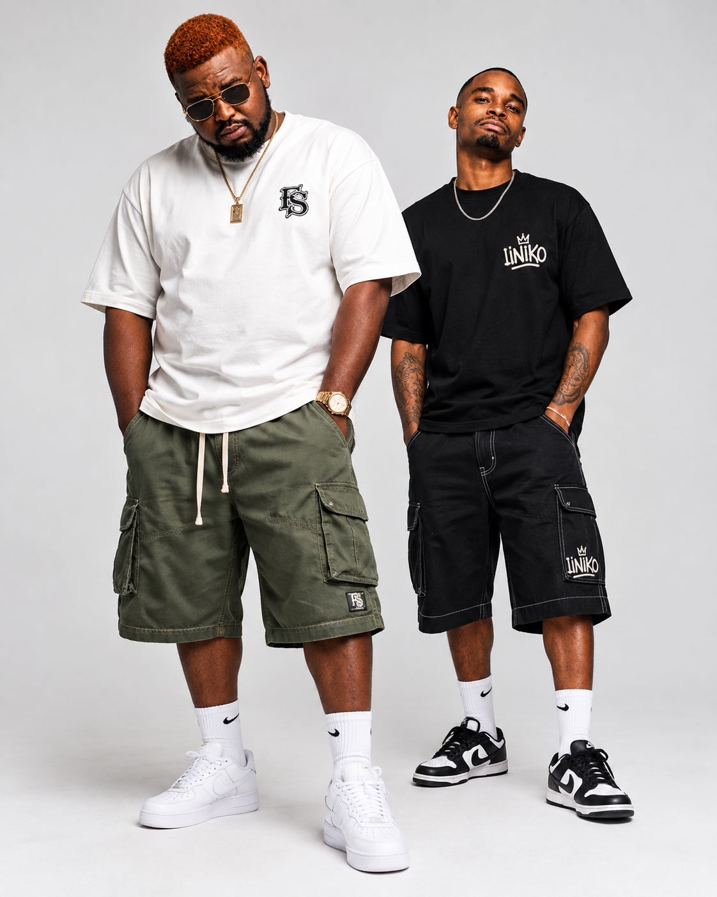

DJ Nerd Zar
Creating energetic records connected to Durban's dance scene. His catalogue includes “Durban Motion,” “Like Me” and “My Barber,” alongside collaborations such as “Awunamali.”
FORGOTTEN SOULs (FSs) brings together DJ Nerd Zar and Niipseedadust: two South African producers and DJs with a distinctive sound rooted in Durban's Gqom and Sgubhu scene. Grounded in KwaZulu-Natal, made to move forward.

A home for the people, places, music and next moves behind FORGOTTEN SOULs.
Meet the sound and its KwaZulu-Natal roots.
ROOM 02Get to know the two creative voices.
ROOM 03Listen, explore releases and follow the artists.
ROOM 04Portraits and moments from the FSs world.
ROOM 05New music, collaborations and live experiences.
ROOM 06Bookings, performances and collaborations.
FORGOTTEN SOULs is a South African music project built around the distinct creative voices of DJ Nerd Zar and Niipseedadust. Their sound draws on the Durban music scene and the pulse of Gqom and Sgubhu, while reaching across 3 Step, Afro House and Afro-Tech.
The artists' music has been featured on regional Gqom compilations, including Gqom Fridays. This is an evolving home for releases, collaborations, performances and sounds that carry KwaZulu-Natal stories to wider audiences.
Explore the FSs music profile ↗
Discover the individual paths, sounds and influences behind FORGOTTEN SOULs.
Creating energetic records connected to Durban's dance scene. His catalogue includes “Durban Motion,” “Like Me” and “My Barber,” alongside collaborations such as “Awunamali.”

Born in Mthwalume on the KwaZulu-Natal South Coast and raised between there and KwaMashu in Durban, Niipseedadust blends coastal drum patterns and Zulu chants with township Afro House and Afro-Tech. Live percussion meets forward-looking production.
Tap play in the official Spotify player to preview and explore Niipseedadust's catalogue. For other releases, choose a track below to open its official listening page.
Open FSs music profile ↗Streaming availability and playback may depend on your location and music-service account.
Listen through the artist and platform links. Some links open an artist or release page rather than an embedded track.
Other featured tracks: “Spirit Bomb” and “Astrum.” Visit the artist profiles for the latest catalogue and platform availability.
Artwork and portraits are contained in their frames so the complete image stays visible instead of being cropped.



The story grows one release, collaboration and live experience at a time. Follow the artists and music profile for new work and announcements as they arrive.
Follow the music profile ↗For bookings, performances and collaboration enquiries, contact FORGOTTEN SOULs directly.